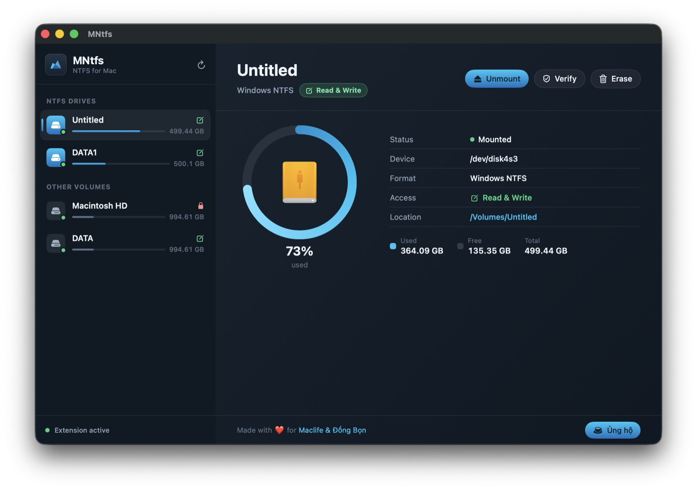
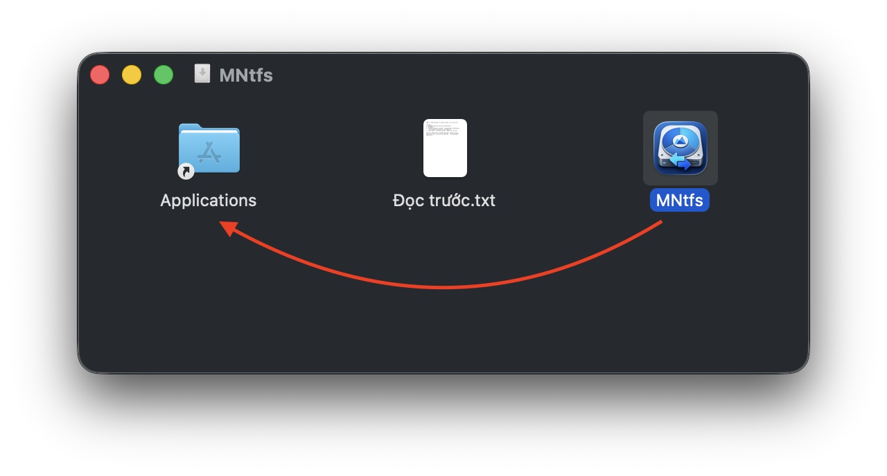
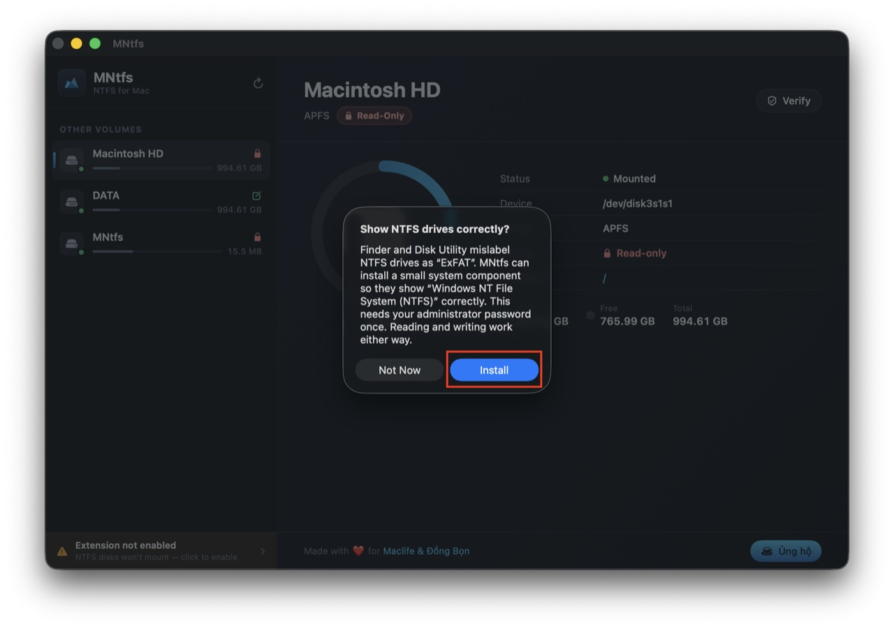
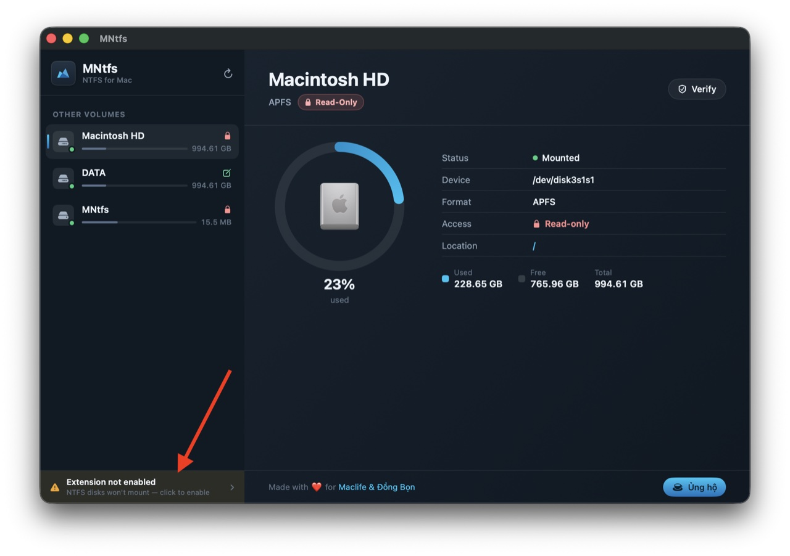
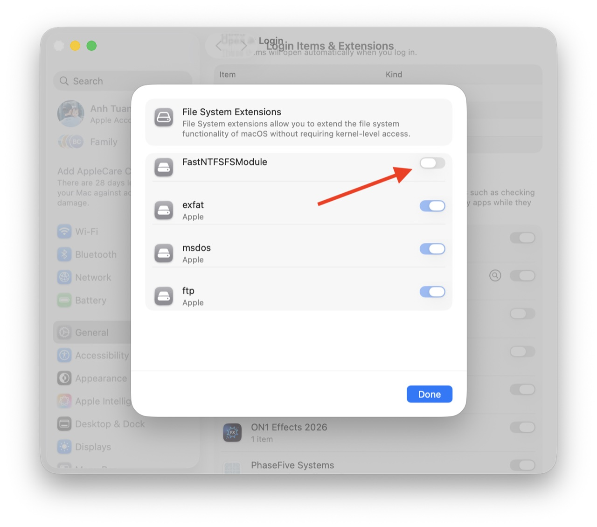

Cắm ổ cứng Windows vào là ghi được ngay — không tắt SIP, không kernel extension, không giảm bảo mật. Chạy nền ở menu bar và tự mount mỗi khi khởi động.

Trình điều khiển NTFS-ghi đầu tiên xây trên FSKit — hạ tầng chính thức mà Apple dùng cho exFAT và MS-DOS.
Toàn quyền chép, sửa, xoá, đổi tên trên ổ NTFS — qua đường FSKit chính thức của macOS.
Ổ Windows tắt nhanh / ngủ đông vẫn ghi được, thay vì bị từ chối như ntfs-3g thường gặp.
Chạy nền ở thanh menu, cắm ổ là tự mount Read & Write — không cần mở app hay rút/cắm lại.
Finder và Disk Utility nhận đúng “Windows NT File System (NTFS)”, không còn dán nhầm “ExFAT”.
Định dạng lại ổ NTFS ngay trong app, có xác nhận an toàn để tránh nhầm ổ.
Không tắt SIP, không hạ Gatekeeper, không nạp kernel. Gỡ ra là máy sạch như chưa cài.
Kết hợp engine NTFS libntfs-3g đã kiểm chứng nhiều năm với FSKit userspace của macOS 15.4+. Không FUSE, không hack kernel.
Sau khi cài xong, cứ cắm ổ NTFS là dùng được — không phải làm lại gì.
Mở file MNtfs.dmg, kéo biểu tượng MNtfs vào thư mục Applications, rồi mở ứng dụng lần đầu.

Ở hộp thoại hiện lên, bấm Install để Finder và Disk Utility hiển thị đúng “Windows NTFS”. Nhập mật khẩu quản trị một lần.

Bấm vào dải Extension not enabled ở góc dưới bên trái cửa sổ app để mở đúng trang cài đặt của hệ thống.

Trong File System Extensions, bật công tắc FastNTFSFSModule rồi bấm Done. Đây là cổng bảo mật của Apple — chỉ bạn mới bật được.

Cắm ổ NTFS vào, nó tự mount Read & Write và app hiện ● Extension active. Từ giờ mọi ổ NTFS đều dùng được ngay, kể cả sau khi khởi động lại máy.
Muốn dùng Erase (định dạng lại)? Cấp thêm quyền cho MNtfs ở Privacy & Security → Full Disk Access — macOS yêu cầu quyền này để truy cập ổ ở mức thấp.
Bản đã ký Developer ID và notarize bởi Apple — chạy trên mọi máy Mac Apple Silicon, không cần tắt bảo mật.
⤓ Tải MNtfs 0.1.0 (.dmg)